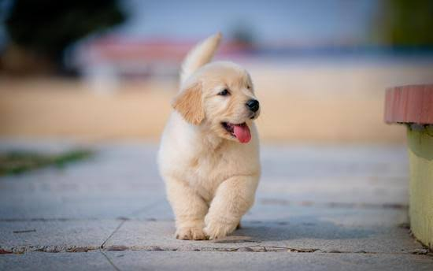
Miel
Cachorro de 4 meses. Juguetón y cariñoso, le encanta que le hablen.
En Patas y Compañía las personas mayores pasan la tarde con perros que buscan un hogar. Ellos reciben cariño y tú recibes compañía.
Reservar una visitaLa soledad no deseada afecta a la salud y al ánimo de muchas personas mayores. Pasar tiempo con un animal ayuda a salir de casa, a moverse y a tener con quién hablar.
Cada año miles de perros acaban en refugios. Una visita cada semana les da cariño, les enseña a confiar y los prepara para ser adoptados.
Elige el día y la hora desde la web o pide ayuda a un familiar.
Ven al centro y pasa un rato con el perro que mejor te encaje.
Si os habéis hecho amigos, te ayudamos con los pasos para adoptarlo.
Conoce a los perros del centro y su carácter para elegir con quién quieres pasar la tarde.

Cachorro de 4 meses. Juguetón y cariñoso, le encanta que le hablen.
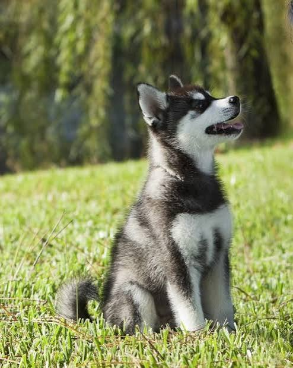
Cachorro de 5 meses. Muy activo, ideal para paseos largos.

Adulta de 3 años. Atenta e inteligente, aprende rápido.

Adulta de 8 años. Tranquila y dulce, perfecta para sentarse a su lado.

Adulto de 6 años. Grande y bonachón, le gusta estar acompañado.
Cachorra de 6 meses. Curiosa y juguetona, le gusta explorar.
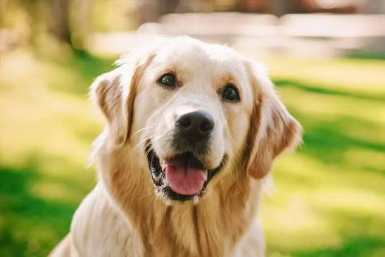
Adulto de 4 años. Fuerte y leal, ideal para paseos largos.
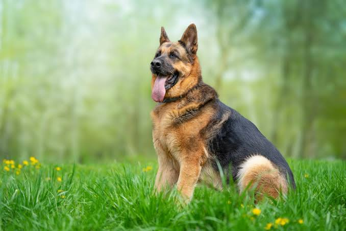
Adulta de 10 años. Muy tranquila, le encanta tumbarse al sol.
Estas son algunas de las tardes que se viven en Patas y Compañía.
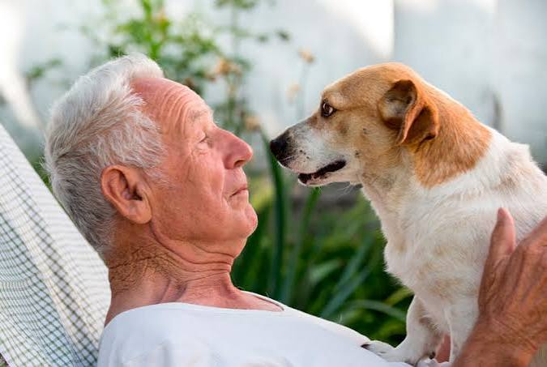
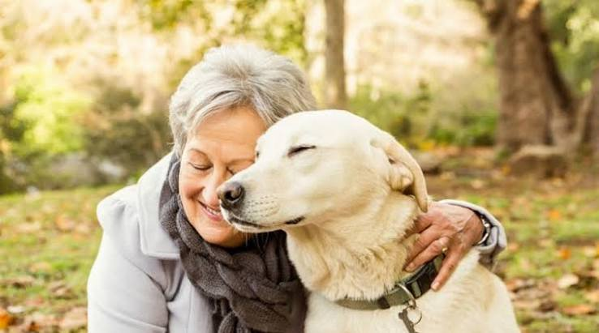
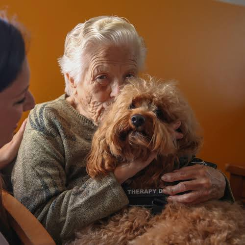
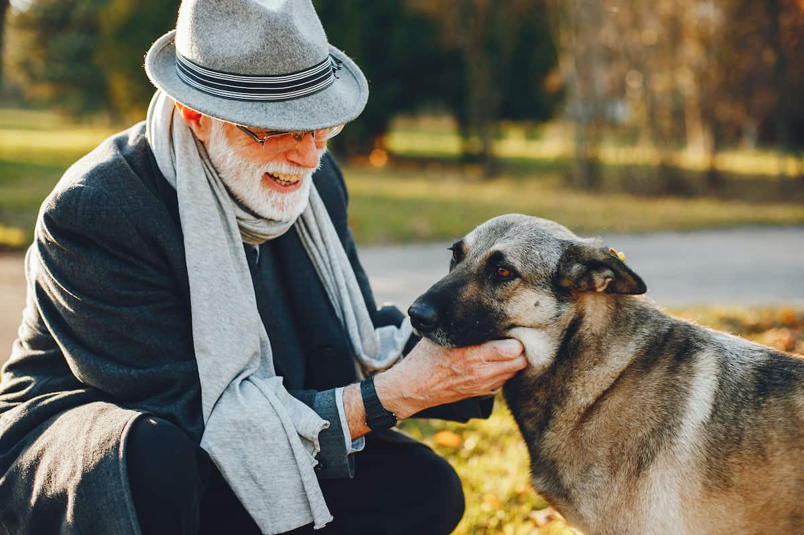
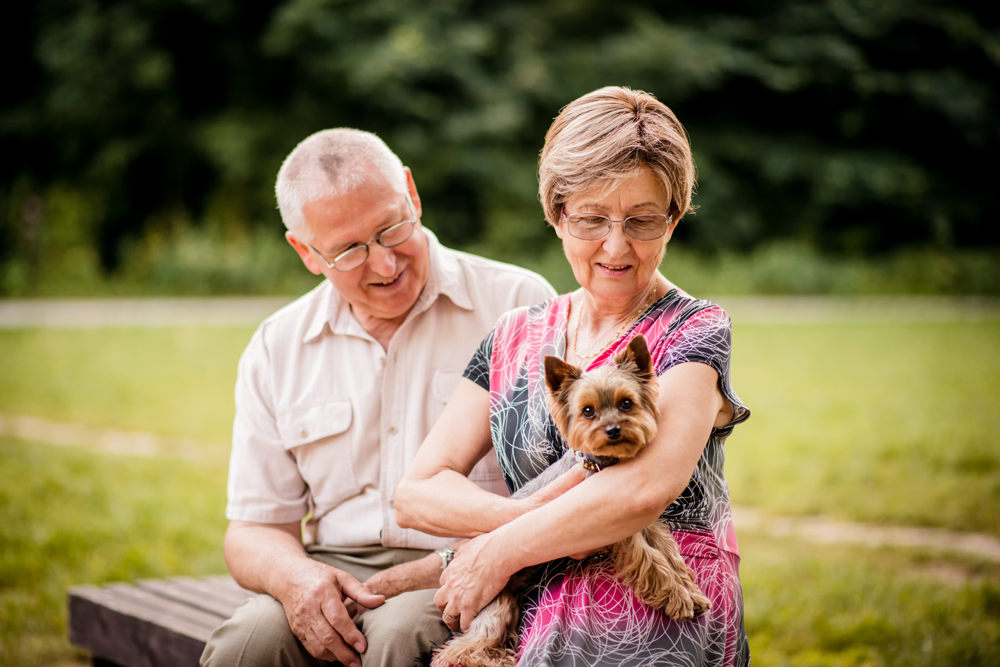
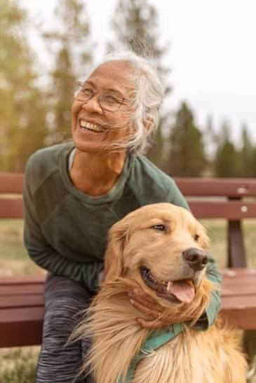
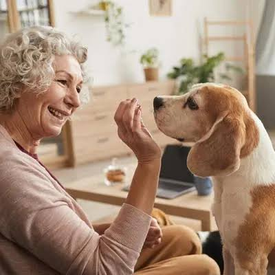
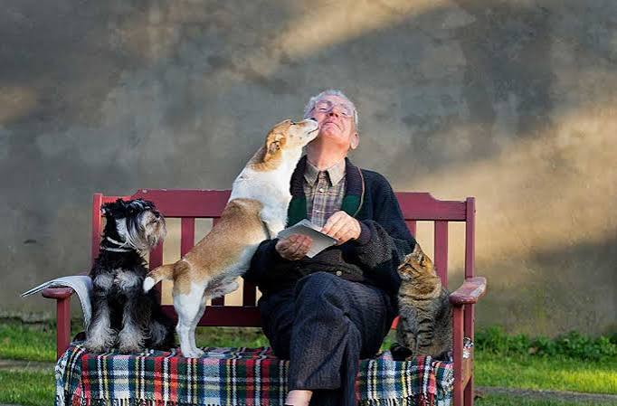